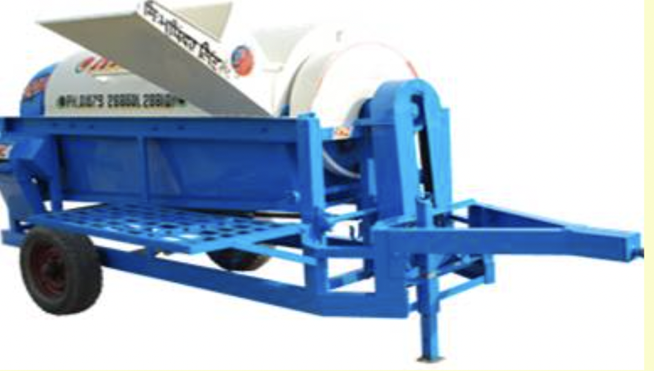
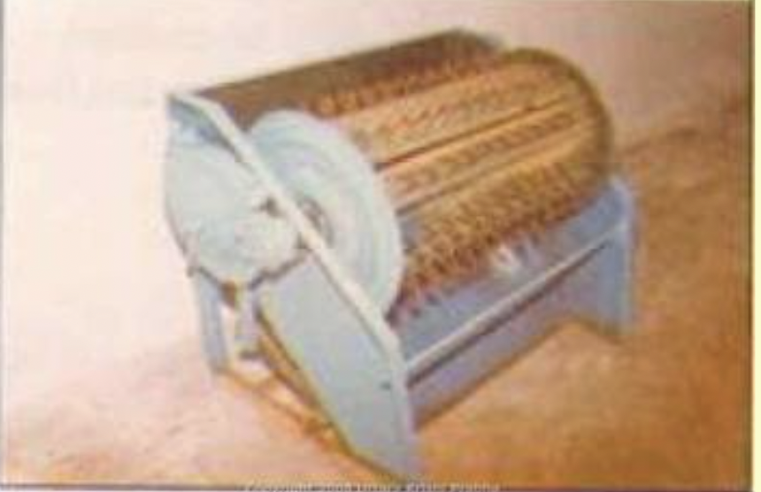

9.0 थ्रेसिंग उपकरण
- 9.1.बहु-फसल थ्रेशर
- 9.2. अक्षीय-प्रवाह धान थ्रेशर
- 9.3. पेडल संचालित धान थ्रेसर
- 9.4. मक्का डीहस्कर/शेलर
9.1 मल्टी-क्रॉप थ्रेसर

विशेषताएं
थ्रेशर में रास्प बार थ्रेशिंग सिलेंडर, ऑसिलेटिंग सिस्टर्स, अवतल और विनोइंग होते हैं और सफाई लगाव। रास्प-बार सिलेंडर कच्चा लोहा के छल्ले, शीट धातु और दांतेदार रैक से बना है और दो भारी पेडल बियरिंग्स पर चलने वाले मुख्य शाफ्ट पर लगाया जाता है। विभिन्न आकारों के विभिन्न पुली हैं इस शाफ्ट पर विनोइंग और पंखे के लगाव को शक्ति संचारित करने के लिए लगाया गया है। सिलेंडर के लिए समायोजन और मशीनों को विभिन्न प्रकार के थ्रेसिंग के लिए उपयुक्त बनाने के लिए ब्लोअर गति और अवतल निकासी प्रदान की जाती है फसलें। इसमें बीआईएस मानक के अनुसार एक सुरक्षित फीडिंग च्यूट जुड़ा हुआ है। पहाड़ी इलाकों में छोटे पावर थ्रेशर लगाने की जरूरत है।
विशेष विवरण:
| बीटर शाफ्ट का व्यास (मिमी) | : 42 |
| बीटर शाफ्ट की लंबाई (मिमी) | : 1400 |
| रास्प-बार (मिमी) के साथ सिलेंडर का व्यास | : 416 |
| सिलेंडर की लंबाई (मिमी) | : 560 |
| जमीनी स्तर से हॉपर की ऊंचाई (मिमी) | : 1500 |
| क्षमता (किलो / घंटा) | : 600-1000 |
| बिजली की आवश्यकता (एचपी/किलोवाट) | : 7.5/5.6 |
उपयोग:
यह धान, रागी, ज्वार, मक्का, सूरजमुखी, गेहूं, सरसों आदि की थ्रेसिंग के लिए उपयुक्त है। .
मशीन की लागत : ₹60,000 – 80,000/-
9.2 अक्षीय-प्रवाह धान थ्रेसर
विशेषताएं
इसमें एक थ्रेसिंग सिलेंडर, अवतल, सिलेंडर आवरण, सफाई प्रणाली और फीडिंग शामिल है ढलान अक्षीय प्रवाह अवधारणा में, फसल को एक छोर से खिलाया जाता है, यह अक्षीय रूप से चलती है और पुआल फसल की पूरी थ्रेसिंग के बाद दूसरे छोर से फेंक दिया जाता है। गहाई के दौरान, फसल सिलेंडर के चारों ओर साढ़े तीन बार घूमती है और सारा अनाज अलग हो जाता है। थ्रेसिंग सिलेंडर खूंटी प्रकार का होता है। थ्रेशर के आवरण में चलने के लिए 7 लौवर हैं।
विशेष विवरण:
| लंबाई (मिमी) | : 2030 |
| चौड़ाई (मिमी) | : 3050 |
| ऊंचाई (मिमी) | : 1960 |
| खिला उपकरण | : च्यूट खिलाना, मैन्युअल रूप से |
| खिला ढलान की लंबाई (मिमी) | : 905 |
| खिला ढलान की चौड़ाई (मिमी) | : 110 |
| सिलेंडर का प्रकार | : स्पाइक टूथ |
| सिलेंडर का आकार, टिप व्यास x लंबाई (एम एम) | : 770 x 1500 |
| अवतल की लंबाई (मिमी) | : 840 |
| अवतल की चौड़ाई (मिमी) | : 570 |
| अवतल निकासी (मिमी) | : 18-21 |
| ब्लोअर का प्रकार, आकार और संख्या | : एस्पिरेटर टाइप, के दो ब्लोअर 400 मिमी व्यास और 160 मिमी चौड़ाई |
| वजन (किग्रा) | : 730 |
| बिजली की आवश्यकता (एचपी/किलोवाट) : | : 35/26.25, ट्रैक्टर PTO |
उपयोग:
इसका उपयोग धान की फसल की थ्रेसिंग के लिए किया जाता है।
मशीन की लागत : ₹80,000/-
9.3 पेडल संचालित धान थ्रेसर
विशेषताएं
इसमें वायर-लूप टाइप थ्रेशिंग सिलेंडर, पावर ट्रांसमिशन सिस्टम, माइल्ड स्टील शीट बॉडी शामिल हैं और पैर पेडल। थ्रेसिंग सिलेंडर में लकड़ी या में एम्बेडेड 'यू' आकार के तार-लूप होते हैं धातु की पट्टियां दो डिस्क से जुड़ीं। एक शाफ्ट थ्रेसिंग सिलेंडर को वहन करता है और से जुड़ा होता है प्रसारण प्रणाली। ट्रांसमिशन सिस्टम में जालीदार गियर या स्प्रोकेट-चेन मैकेनिज्म होता है। बड़ा गियर या स्प्रोकेट लिंक के साथ फुट पेडल/बार से जुड़ा होता है। फुट पेडल/बार हमेशा होता है उठी हुई स्थिति में। पेडल दबाने पर थ्रेसिंग सिलिंडर घूमने लगता है। निरंतर के लिए सिलेंडर के रोटेशन, पेडल को कम किया जाता है और बार-बार उठाया जाता है। संचालन के लिए, धान के बंडल को हाथों में पकड़कर फसल के ईयरहेड हिस्से को घूमते हुए सिलेंडर पर रखा जाता है। तार-लूप ईयरहेड्स से टकराते हैं और अनाज बाकी फसल से अलग हो जाता है।
विशेष विवरण:
| आयाम (एलXडब्ल्यूXएच) (मिमी) | : 1250 x 650 x 630 |
| सिलेंडर का आकार (मिमी) | : 400 व्यास x 600 लंबाई |
| लूप वायर व्यास (मिमी) | : 4 |
| तार छोरों की संख्या | : 44 |
| वायर लूप स्ट्रिप्स की संख्या | : 12 |
| प्रसारण प्रणाली | : 1:4 गियर अनुपात के साथ पेडल क्रैंक तंत्र |
| वजन (किग्रा) | : 36 |
| शक्ति का स्रोत | : एक व्यक्ति |
उपयोग:
इसका उपयोग धान की फसल की थ्रेसिंग के लिए किया जाता है। इसे संचालित करना आसान है और इसके संचालन में अधिक प्रयास की आवश्यकता नहीं होती है क्योंकि यह पैर द्वारा संचालित होता है।
मशीन की लागत: ₹10000/-
9.4 मक्का डी-हुस्कर / शेलर

विशेषताएं
मक्का डी-हस्कर कम शेलर दो प्रकार के होते हैं, स्पाइक टूथ टाइप और एक्सियल फ्लो टाइप। स्पाइक टूथ टाइप शेलर में, बेहतर शेलिंग दक्षता के लिए खूंटे को अलग-अलग ऊंचाई पर कंपित किया जाता है। स्पाइक्स को प्रत्येक पंक्ति में 6 स्पाइक्स के साथ 6 पंक्तियों में रखा गया है। छिलके वाले मक्का को भूसी से अलग करने के लिए छलनी में 1.25 सेमी व्यास का उद्घाटन होता है। अक्षीय प्रवाह प्रकार के थ्रेशर में, सिलेंडर पर खूंटे लगाए जाते हैं और फसल को आउटलेट तक पहुंचाने के लिए ड्रम की ऊपरी परिधि पर लूवर प्रदान किए गए थे।
| विशेष विवरण: | स्पाइक टूथ टाइप | अक्षीय प्रकार |
|---|---|---|
| लंबाई (मिमी) | 1765 | 3400 |
| चौड़ाई (मिमी) | 1065 | 1140 |
| ऊंचाई (मिमी) | 1570 | 2190 |
| थ्रेसिंग सिलेंडर का व्यास (मिमी) | 480 | 495 |
| थ्रेसिंग सिलेंडर की लंबाई (मिमी) | 325 | 1460 |
| सिलेंडर की गति (एम / एस) | 16.4 | 13.7 |
| थ्रेसिंग ड्रम का प्रकार | स्पाइक टूथ | खूंटी प्रकार |
| ब्लोअर का प्रकार | केंद्रत्यागी | केंद्रत्यागी |
| चलनी की संख्या | 2 | 3 |
| ऊपरी छलनी का उद्घाटन आकार (मिमी) | 12 | 12.5 |
| मध्यम चलनी का उद्घाटन आकार (मिमी) | - | 7 |
| निचली छलनी का उद्घाटन आकार (मिमी) | 2 | 3 |
| अवतल निकासी (मिमी) | 50 | 50 |
| अवतल का उद्घाटन आकार (मिमी) | 5x5 | 5.1 x 5.1 |
| कोब्स की नमी सामग्री (%) | 12-28 | 12-28 |
| थ्रेसिंग क्षमता (किलो / घंटा) | 450-650 | 1200-2800 |
| शक्ति स्रोत (एचपी/किलोवाट) | 35/26, ट्रैक्टर | 35/26, ट्रैक्टर |
उपयोग:
इसका उपयोग मक्का के दाने की थ्रेसिंग के लिए किया जाता है।